Here are some of the hyperbolic and spherical tilings I created while working on my hyperbolic maze demo. The images are rendered from PostScript files which I created using a program that I wrote. The reason I made these was so that I could get comfortable with hyperbolic space. | |||
| 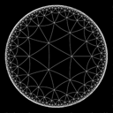 | Tiling #1Hyperbolic tiling with 7 equilateral triangles meeting at each vertex, Poincaré projection. Here the tiling is aligned to the center of one triangle. |
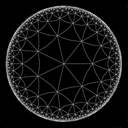 | Tiling #2Same as tiling #1, but aligned to a vertex. |
| 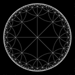 | Tiling #3Same as tiling #2, but with 8 triangles meeting at a vertex. In hyperbolic space, these are slightly larger triangles. |
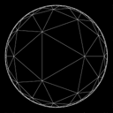 | Tiling #4Same as tiling #1, but this is a Klein projection. In the Klein projection, straight lines in hyperbolic space are seen as straight lines, but angles are distorted by the projection. |
 |
Tiling #5Same as tiling #4, but aligned to a vertex. |
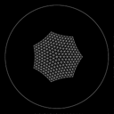 | Tiling #6This is seven equilateral triangles which have been subdivided uniformly in hyperbolic space. You might think of this as portion of a "hyperbolic geodesic dome", as the construction is completely analogous. The projection is Poincaré. |
| 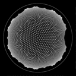 | Tiling #7Same as tiling #5, but I have added more triangles. Looks kind of like a fly's eye. |
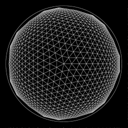 | Tiling #8Here is the same hyperbolic geodesic dome, but under Klein projection. |
| 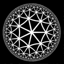 | Tiling #97-triangle Poincaré tiling, but with thickened edges. |
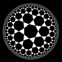 | Tiling #10This is the hyperbolic equivalent of an icosidodecahedron. In this tiling, each vertex is surrounded by two 7-gons and two triangles. |
| 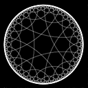 | Tiling #11Same as tiling #10, but in wireframe. |
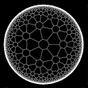 | Tiling #12This is supposed to be a hyperbolic tiling where each vertex is surrounded by a 7-gon and two hexagons. The hexagons, unfortunately, aren’t quite regular. (They can be made regular by enlarging the 7-gons slightly.) |
| 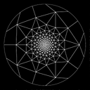 | Tiling #13This is a spherical tiling of an icosahedron subdivided into a geodesic dome. The projection is stereographic and clamped to a radius of 5 units. | 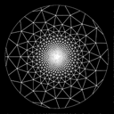 | Tiling #14Same as tiling #13 but with more subdivisions. |
| 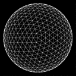 | Tiling #15Same as tiling #14, but under orthogonal projection. |
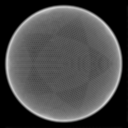 | Tiling #16Same as tiling #15, but with more subdivisions. |
This page © Bernie Freidin, 2000.
Last updated April 4th, 2000.
{kind=link}
{kind=link}
{kind=link}
{kind=link}
{kind=link}
{kind=link}
{kind=link}
{kind=link}
{kind=link}
{kind=link}
{kind=link}
{kind=link}
{kind=link}
{kind=link}
{kind=link}